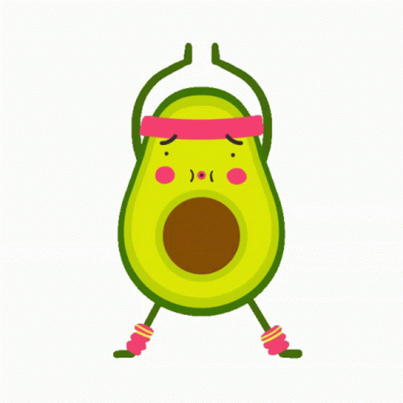

Sobre mi
Soy un jóven desarollador web el cual está iniciando a adquieriri los conocimientos necesarios para poder diseñar páginas de alto calibre.

Soy un jóven desarollador web el cual está iniciando a adquieriri los conocimientos necesarios para poder diseñar páginas de alto calibre.
actualmente estoy en la construcción de unos sencillos proyectos como el crear, diseñar, mejorar y optimizar la página que estás mirando en este momento, así como la cracíon de un comparador de precios de videojuegos y la creación de la página web de un pequeño restaurante de comida.

Actualmente estoy con el aprendizaje y la formación de lenguajes de programación como java, js, y mejorando lo que es Css ya que es mi principal fuerte al momento de diseñar páginas, probablemente el siguiente comocimiento sea react o algo por el estilo.

Unas de mis más grandes pasiones es el desarrollo web así como lo son:
Bueno...para nadie es una secreto que la constancia hace al maestro...y por esta razón permítme hacerde o darte algunas recomendaciones para así lograr un mejor desempeño.
Te puedo aconsejar que por nada del mundo dejes de practiar aquello que ye haga feliz y que también disfrutes hacer; Al igual que tu tal vez... En algún punto me pregunte si en verdad podría lograr grandes cosas... y la verdad es que sí.
Para que lograr ayudarte en cualquier ámbito dejame darte unos pequeños consejos:
| Actividad recomedada. | Beneficio. | Tiempo de realización. |
|---|---|---|
| Distracciones. | El beneficio de esto es que puedes lograr llegar a tener un estado de salud mental excepcional y maravilloso, ya que evitas la fatiga excesiva. | cada que te sientas estresado o frustrado. |
Leer. |
Te hago esta recomendación ya que ayuda a ampliar tu vocabularios, así como a tener mejor redacción y ayuda a pasar un momento de distracción o recreativo. | Te recomiento realidar de 3 o 4 sesiones de lectura por semana. |
Musica. |
Una gran recomendación que puedo hacerte es lograr trabajar con música ya que te ayuda a la concentración, así como a lograr levantar tus ánimos y autoestima. | Realizalo si puedes todos los días al momento de empezar a realziar algún trabajo. |
| Tener horarios | unas de mis recomendaciones más grandes es que logres adaptarte a tener ciertos horarios establecidos, ya sea tener una hora en específica en alguna parte del día para realizar alguna actividad o tener un lapso de horas definidas para lograr el objetivo que deseas alcanzar. | esto te recomiendo tenerlo por lo menos organizado con anticipación y que cada mes sea distinto para evitar caer en lo rutinario. |
| Ejercicio  | El realizar alguna rutina de ejercicio ayuda a que tu estado mental sea Bueno que tu cuerpo logre tener mayor oxigenación de sangre y ayuda a la disminución tanto como de estrés e igual a la frustraciones, ayuda a que te mantengas en adecuado peso con relación a tu fisionomía y evita enfermedades cardiacas. | Te recomieno hacerlo del diario, saltando el fin de semana. Además te recomiendo iniciar con rutinas cortas para ir acostumbrando al cuerpo. |
A continuación te dejeraé unos campos para que los llenes en el caso que quieras comunicarte conmigo.